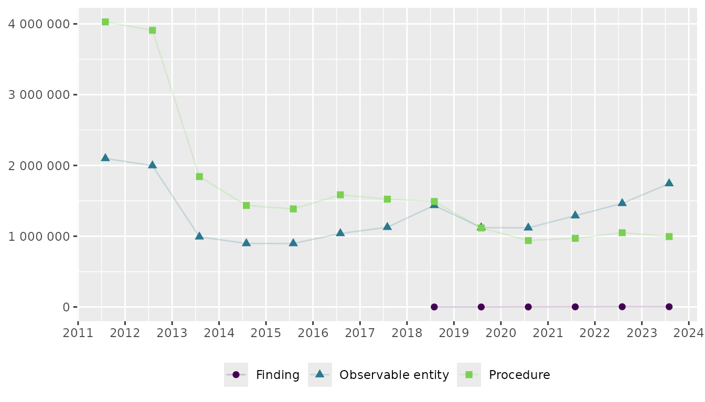

Extract semantic tags from SNOMED CT descriptions
Source:vignettes/extract-snomedct-sem-tag.Rmd
extract-snomedct-sem-tag.RmdSNOMED CT descriptions include semantic tags in parentheses that classify concepts into categories such as (procedure), (finding), (observable entity), or (disorder). Understanding these tags helps researchers interpret what types of clinical activities their codelists capture. For example, a depression screening codelist might include procedures (the act of screening), observable entities (measurable scores), and findings (clinical conclusions).
Worked example
In this example we’re looking at the Depression
screening codes (DEPSCRN_COD) from the NHS
Primary Care Domain Reference Set Portal:
Setup
# Load packages
library(opencodecounts)
library(dplyr)
library(stringr)
library(ggplot2)
library(scales)
library(gt)
# Load code extract semantic tag
depscrn_cod <- get_codelist(
"https://www.opencodelists.org/codelist/nhsd-primary-care-domain-refsets/depscrn_cod/20250627/"
)
# Get data for both codelists and extract semantic tag
depscrn_cod_usage <- snomed_usage |>
filter(snomed_code %in% c(depscrn_cod$code)) |>
mutate(
semantic_tag = extract_semantic_tag(description),
semantic_tag = str_to_sentence(semantic_tag),
description_short = strip_semantic_tag(description),
)Table with most used codes
# Calculate sum by code for entire time period
df_tab_top10_depscrn_cod <- depscrn_cod_usage |>
group_by(snomed_code, description_short, semantic_tag) |>
summarise(total_usage = sum(usage), .groups = 'drop') |>
mutate(ratio_usage = total_usage / sum(total_usage)) |>
slice_max(order_by = total_usage, n = 10)
# Create table
df_tab_top10_depscrn_cod |>
group_by(semantic_tag) |>
gt() |>
cols_label(
snomed_code = "SNOMED code",
description_short = "Description",
total_usage = "Usage",
ratio_usage = "%"
) |>
tab_style(
style = cell_text(weight = "bold"),
locations = cells_column_labels()
) |>
tab_style(
style = cell_text(font = "Courier New"),
locations = cells_body(columns = snomed_code)
) |>
cols_align(align = "left", columns = snomed_code) |>
fmt_number(total_usage, decimals = 0) |>
fmt_percent(ratio_usage, decimals = 2)| SNOMED code | Description | Usage | % |
|---|---|---|---|
| Procedure | |||
| 200971000000100 | Depression screening using questions | 21,510,040 | 54.46% |
| 171207006 | Depression screening | 609,620 | 1.54% |
| 792491000000100 | Assessment using Whooley depression screen | 122,830 | 0.31% |
| 715252007 | Depression screening using Patient Health Questionnaire Nine Item score | 25,760 | 0.07% |
| Observable entity | |||
| 720433000 | Patient Health Questionnaire Nine Item score | 16,229,920 | 41.09% |
| 401320004 | Hospital Anxiety and Depression scale: depression score | 790,280 | 2.00% |
| 450320001 | Edinburgh postnatal depression scale score | 146,120 | 0.37% |
| 718366000 | Beck Depression Inventory II score | 43,340 | 0.11% |
| 803351000000106 | Whooley depression screen score | 7,010 | 0.02% |
| Finding | |||
| 112011000119102 | Negative screening for depression on Patient Health Questionnaire 9 | 7,620 | 0.02% |
Figure showing trends over time by semantic tag
# Calculate yearly sum by semantic tag
df_fig_sem_tag_depscrn_cod <- depscrn_cod_usage |>
group_by(start_date, semantic_tag) |>
summarise(total_usage = sum(usage), .groups = 'drop')
# Create figure
df_fig_sem_tag_depscrn_cod |>
ggplot(
aes(
y = total_usage,
x = start_date,
colour = semantic_tag,
shape = semantic_tag
)
) +
geom_line(alpha = 0.2) +
geom_point(size = 2) +
labs(title = NULL, x = NULL, y = NULL, colour = NULL, shape = NULL) +
scale_x_date(date_breaks = "1 year", labels = label_date_short()) +
scale_y_continuous(labels = label_number(accuracy = 1), limits = c(0, NA)) +
theme(legend.position = "bottom") +
scale_colour_viridis_d(end = .8)